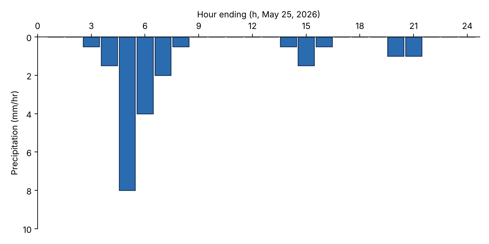
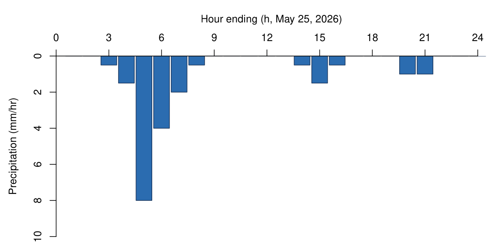
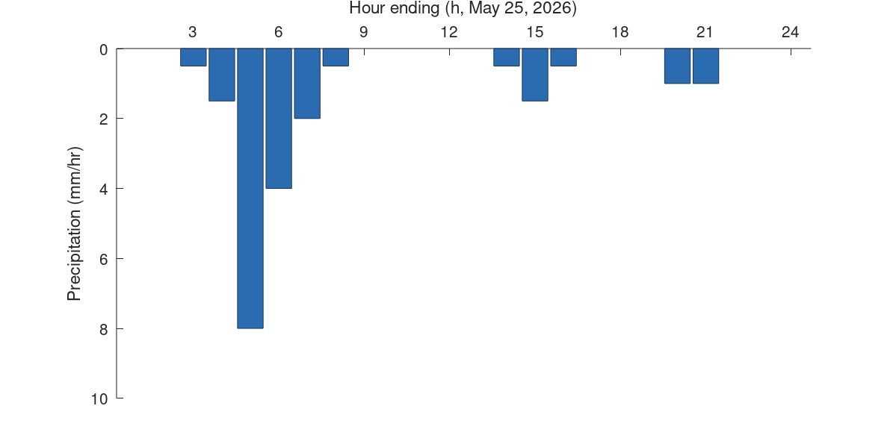

Chapter 3 · Precipitation
Figure 3.16: Hourly hyetograph for a 24-hour period
Hourly precipitation (21 mm total) drawn as hanging bars.
Source: Chapter 3 draft; author code and data (files labelled "Figure 3.17/4.17" in the chapter folder)
The chapter-folder code/data files are labelled 3.17/4.17 but reproduce the hourly hyetograph (Fig. 3.16 in the draft).
No external data file: values are small and embedded in the code.

Code: hyetograph_hourly.py · image: figure_python.png

"""Chapter 3, Figure 3.16 - Hourly hyetograph for a 24-hour period (21 mm total).
Code from 'Code for Figure 4.17.docx' (the file name uses an older figure number; this is the hourly hyetograph in
Figure 3.16). Data match 'Data_Figure_3_17.xlsx' (hour-ending precipitation, mm/hr), so they are included here."""
import matplotlib.pyplot as plt
hrs = list(range(1, 25))
p = {3: 0.5, 4: 1.5, 5: 8, 6: 4, 7: 2, 8: 0.5, 14: 0.5, 15: 1.5, 16: 0.5, 20: 1.0, 21: 1.0}
v = [p.get(h, 0) for h in hrs]
assert abs(sum(v) - 21) < 1e-9 # total = 21 mm
fig, ax = plt.subplots(figsize=(8, 4), dpi=200)
ax.bar(hrs, v, width=0.9, color="#2b6cb0", edgecolor="#1a365d")
ax.set_ylim(10, 0) # inverted axis: bars hang from the top
ax.set_xlim(0.3, 24.7)
ax.set_xticks(range(0, 25, 3))
ax.set_xlabel("Hour ending (h, May 25, 2026)")
ax.set_ylabel("Precipitation (mm/hr)")
ax.spines[['right', 'bottom']].set_visible(False)
ax.xaxis.set_label_position("top")
ax.xaxis.tick_top()
plt.tight_layout()
plt.savefig("figure_python.png")

Code: hyetograph_hourly.R · image: figure_r.png

# Chapter 3, Figure 3.16 - Hourly hyetograph for a 24-hour period (21 mm total)
hrs <- 1:24
v <- numeric(24); v[c(3,4,5,6,7,8,14,15,16,20,21)] <- c(0.5,1.5,8,4,2,0.5,0.5,1.5,0.5,1,1)
stopifnot(abs(sum(v) - 21) < 1e-9)
png("figure_r.png", width = 1200, height = 600, res = 150)
par(mar = c(1, 4.5, 4.5, 1))
plot(NA, xlim = c(0, 24.5), ylim = c(10, 0), xaxs = "i", yaxs = "i", xaxt = "n", bty = "n",
xlab = "", ylab = "Precipitation (mm/hr)")
rect(hrs - 0.45, 0, hrs + 0.45, v, col = "#2b6cb0", border = "#1a365d")
axis(3, at = 3 * (0:8), labels = 3 * (0:8))
mtext("Hour ending (h, May 25, 2026)", side = 3, line = 2.5)
dev.off()

Code: hyetograph_hourly.m · image: figure_matlab.png

% Chapter 3, Figure 3.16 - Hourly hyetograph for a 24-hour period (21 mm total)
hrs = 1:24;
v = zeros(1, 24); v([3 4 5 6 7 8 14 15 16 20 21]) = [0.5 1.5 8 4 2 0.5 0.5 1.5 0.5 1 1];
assert(abs(sum(v) - 21) < 1e-9)
fig = figure('Position', [100 100 800 400]);
ax = axes(fig); hold(ax, 'on');
for k = 1:24
patch(ax, k + [-0.45 0.45 0.45 -0.45], [0 0 v(k) v(k)], [0.169 0.424 0.69], 'EdgeColor', [0.1 0.21 0.39]);
end
set(ax, 'YDir', 'reverse', 'XAxisLocation', 'top', 'XTick', 0:3:24, 'Box', 'off');
xlim(ax, [0.3 24.7]); ylim(ax, [0 10]);
xlabel(ax, 'Hour ending (h, May 25, 2026)'); ylabel(ax, 'Precipitation (mm/hr)');
print(fig, '-dpng', '-r150', 'figure_matlab.png');